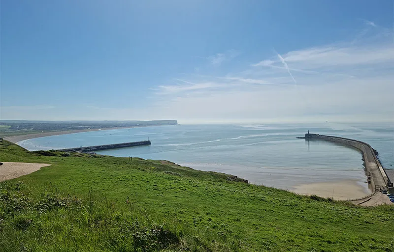
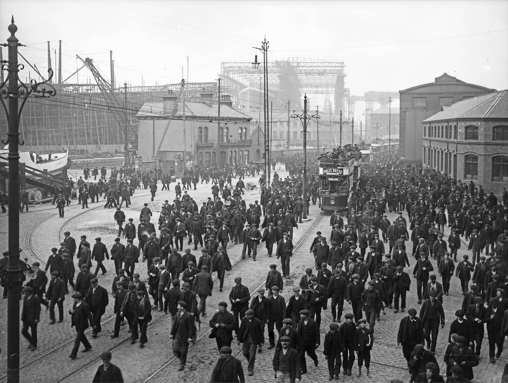
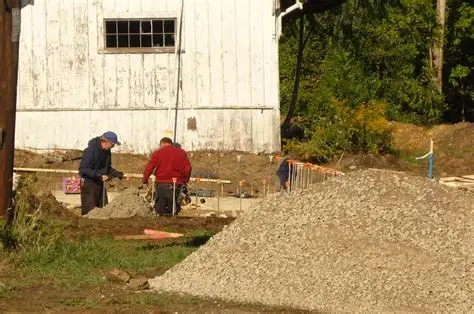

Newhaven Heritage aims to create a world-class community museum and cultural centre that combines innovation, engaging displays, and strong community involvement. The centre would celebrate Newhaven’s unique history and identity while helping visitors understand how this proud independent community thrived alongside a major city. Any surplus income generated would be reinvested into projects that support the well-being of Newhaven residents and strengthen the community’s sense of place, continuing the long tradition of local care and mutual support once embodied by the Ancient Free Fishermen’s Society of Newhaven.
Whether or not our vision comes to fruition depends on public opinion. A counter-bid by another organisation inends that the Anchor Building would be used for pre-school years run by a private nursery; Newhaven Heritage seeks to use the building as a place of learning, a place of engagement, a place of entertainment, and a place of resource. If our vision appeals to you, please put pressure on the Councillors in whose hands the ultimate decision rests. It is now a possibility that the new school will not be ready for use until Summer 2021 due to the interuption to construction work because of the coronavirus crisis. It is not too late to change the Council’s mind.

Our Newhaven facebook groups create a supportive space where residents share updates, build connections, exchange ideas, celebrate community spirit, and also stay engaged together for a better community.